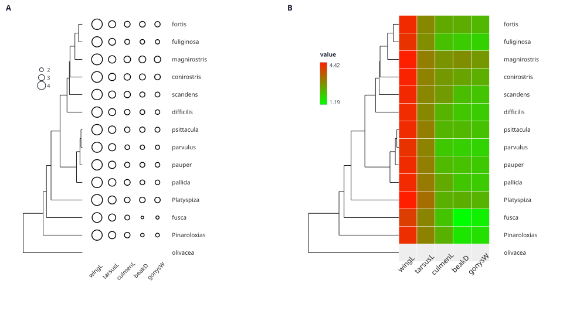
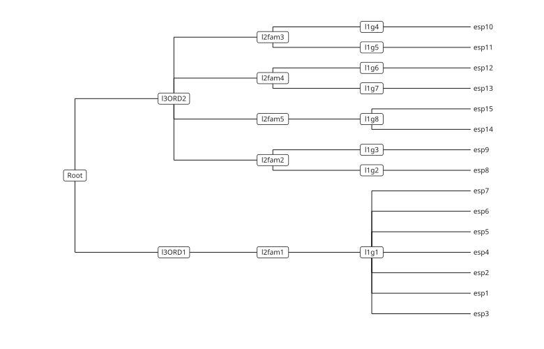
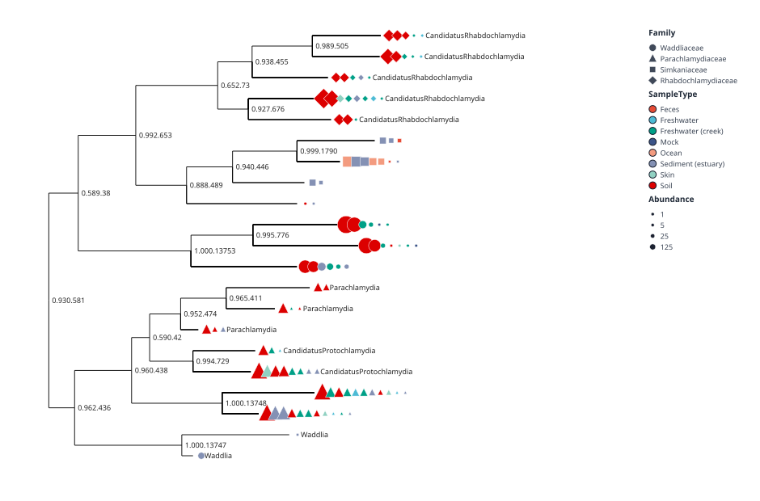
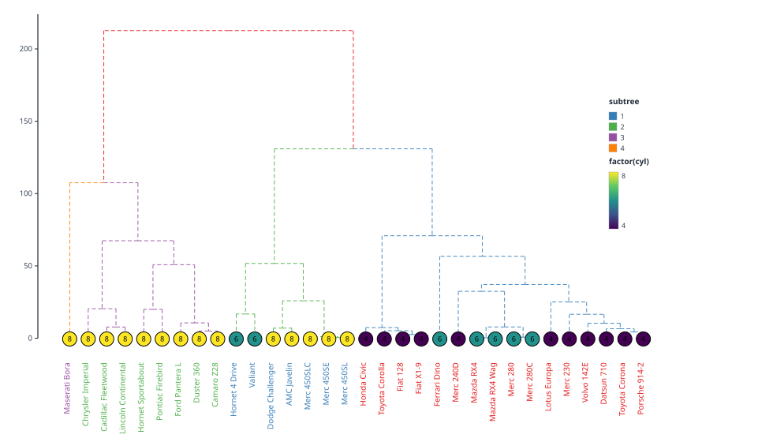
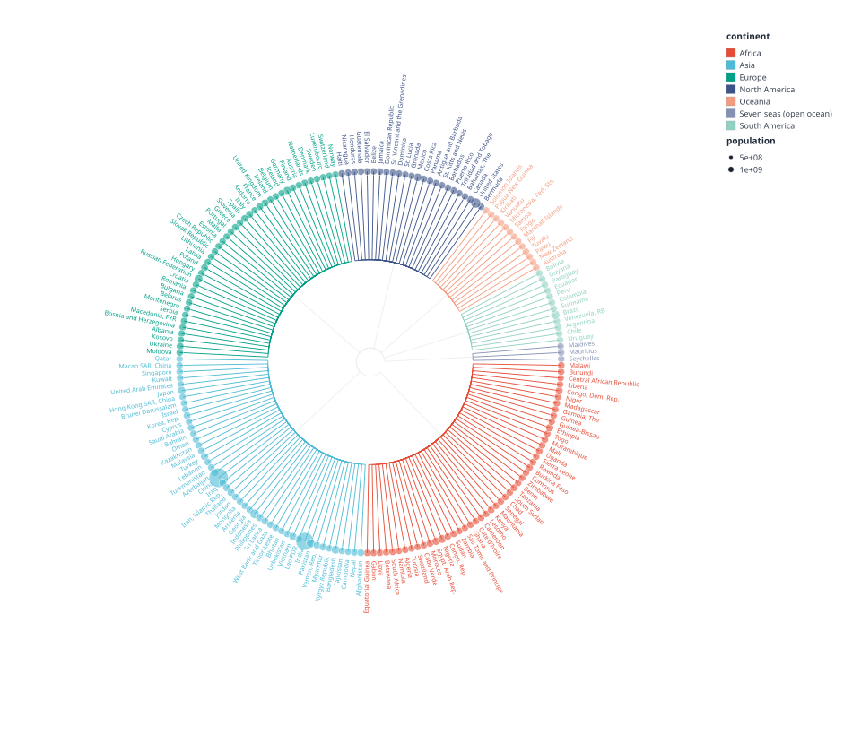

9. ggtree for Other Tree-like Objects
Phylogenetic trait containers, taxonomic hierarchies, microbiome abundance tables, agglomerative clustering dendrograms, directed k-ary graphs, and general parent-child edge lists fortify into a uniform tree coordinate grammar.
9.1 phylo4d, ade4 Phylog, and phyloseq Objects
ggtree() natively visualizes phylo4/phylo4d trait tables, taxo2phylog() rank hierarchies, and phyloseq() microbiome abundance staggers and geom_density_ridges facets.

▶ Show / Hide Python Code phylo4phylo4dggtreegeom_tippoint
from ggtree import (
read_tree, read_table, system_file, DataFrame, seq, phylo4, phylo4d,
ggtree, aes, geom_tippoint, geom_text, geom_tiplab, scale_size_continuous,
xlim, theme, vexpand, gheatmap, hexpand, plot_list,
)
geospiza_tree = read_tree(system_file("extdata", "TDbook", "geospiza.nwk"))
geospiza_data = read_table(system_file("extdata", "TDbook", "geospiza_data.tsv"), sep="\t", header=True)
g1 = phylo4(geospiza_tree)
g2 = phylo4d(g1, geospiza_data)
d1 = DataFrame({"x": seq(1.1, 2.0, length_out=5), "lab": geospiza_data.columns})
p1 = (
ggtree(g2)
+ geom_tippoint(aes(size="wingL"), x=d1["x"][0], shape=1)
+ geom_tippoint(aes(size="tarsusL"), x=d1["x"][1], shape=1)
+ geom_tippoint(aes(size="culmenL"), x=d1["x"][2], shape=1)
+ geom_tippoint(aes(size="beakD"), x=d1["x"][3], shape=1)
+ geom_tippoint(aes(size="gonysW"), x=d1["x"][4], shape=1)
+ scale_size_continuous(range=(3, 12), name="")
+ geom_text(aes(x="x", y="0", label="lab"), data=d1, angle=45)
+ geom_tiplab(offset=1.3)
+ xlim(-0.1, 3.2)
+ theme(legend_position=(0.1, 0.75))
+ vexpand(0.14, -1)
+ vexpand(0.06, 1)
)
p2 = (
gheatmap(ggtree(g1), data=geospiza_data, colnames_angle=45, low="#00FF00", high="#FF1E00")
+ geom_tiplab(offset=1.0)
+ hexpand(0.2)
+ vexpand(0.14, -1)
+ vexpand(0.06, 1)
+ theme(legend_position=(0.1, 0.75))
)
plot_list(p1, p2, ncol=2, tag_levels="A")

▶ Show / Hide Python Code read_tableas_taxotaxo2phylogggtree
from ggtree import read_table, system_file, as_taxo, taxo2phylog, ggtree, geom_tiplab, geom_nodelab, hexpand
taxo_df = read_table(system_file("extdata", "TDbook", "taxo_eg.tsv"), sep="\t", header=True)
tax_phy = taxo2phylog(as_taxo(taxo_df))
p = ggtree(tax_phy) + geom_tiplab() + geom_nodelab(geom="label") + hexpand(0.12) + hexpand(0.14, -1)
p

▶ Show / Hide Python Code read_treeread_tablephyloseqggtree
from ggtree import (
read_tree, read_table, system_file, phyloseq, ggtree, aes,
geom_nodelab, geom_point, geom_tiplab, scale_size_continuous, log_trans,
theme, hexpand,
)
tr = read_tree(system_file("extdata", "TDbook", "GP_Chlamydiae.nwk"))
melted = read_table(system_file("extdata", "TDbook", "GP_Chlamydiae_melted.tsv"), sep="\t", header=True)
gp_chl = phyloseq(tr, melted_df=melted)
# Position genus labels cleanly past each tip's rightmost staggered sample dot
df_ps = gp_chl.fortify()
max_x_by_node = {}
for rec in df_ps.to_records():
if rec.get("isTip"):
nid = rec["node"]
xp = float(rec["x"]) + float(rec.get("hjust") or 0.0)
if nid not in max_x_by_node or xp > max_x_by_node[nid]:
max_x_by_node[nid] = xp
genus_df = df_ps[df_ps["isTip"]]
seen_nodes = set()
keep_idx = []
xs_g = []
for idx_r, rec in enumerate(genus_df.to_records()):
nid = rec["node"]
if nid not in seen_nodes:
seen_nodes.add(nid)
keep_idx.append(idx_r)
xs_g.append(max_x_by_node.get(nid, float(rec["x"])))
genus_sub = genus_df.iloc[keep_idx]
genus_sub["x_lbl"] = xs_g
p = (
ggtree(gp_chl)
+ geom_nodelab(aes(label="label"), hjust=-0.05, size=2.8)
+ geom_point(aes(x="x + hjust", color="SampleType", shape="Family", size="Abundance"), na_rm=True)
+ geom_tiplab(data=genus_sub, mapping=aes(x="x_lbl", y="y", label="Genus"), hjust=-0.12, size=2.9)
+ scale_size_continuous(trans=log_trans(5))
+ theme(legend_position="right")
+ hexpand(0.45)
)
p

▶ Show / Hide Python Code read_treeread_tablephyloseqggtree
from ggtree import (
read_tree, read_table, DataFrame, system_file, phyloseq, ggtree, aes,
geom_tippoint, geom_facet, geom_density_ridges, guides, guide_legend,
)
tr = read_tree(system_file("extdata", "TDbook", "GP_merged_order.nwk"))
melted = read_table(system_file("extdata", "TDbook", "GP_merged_order_melted.tsv"), sep="\t", header=True)
merged_gp = phyloseq(tr, melted_df=melted, expand_samples=False)
recs_keep = [r for r in melted.to_records() if float(r["Abundance"]) < 120]
melt_simple = DataFrame({
"OTU": [r["OTU"] for r in recs_keep],
"val": [float(r["Abundance"]) for r in recs_keep],
})
p = (
ggtree(merged_gp)
+ geom_tippoint(aes(color="Phylum"), size=1.5)
+ geom_facet(
mapping=aes(x="val", group="label", fill="Phylum"),
data=melt_simple,
geom=geom_density_ridges,
panel="Abundance",
color="grey80",
lwd=0.3,
)
+ guides(color=guide_legend(ncol=1))
)
p
9.2 Hierarchical Clustering Dendrograms (hclust & cutree)
Cluster distance matrices via hclust(), cut subtrees with cutree(), highlight clades via groupClade(), and orient top-down with layout_dendrogram().

▶ Show / Hide Python Code read_tabledisthclustcutree
from ggtree import (
read_table, DataFrame, system_file, dist, hclust, cutree, MRCA,
groupClade, ggtree, aes, layout_dendrogram, geom_tippoint, geom_tiplab,
scale_color_brewer, theme_dendrogram, theme, margin,
)
mtcars = read_table(system_file("extdata", "TDbook", "mtcars.tsv"), sep="\t", header=True)
hc = hclust(dist(mtcars))
clus = cutree(hc, 4)
g = clus.groups()
p = ggtree(hc, linetype="dashed")
clades = [MRCA(p, tips) for _, tips in sorted(g.items())]
p = groupClade(p, clades, group_name="subtree") + aes(color="subtree")
d = DataFrame({"label": mtcars.rownames, "cyl": [int(v) for v in mtcars["cyl"]]})
p_out = (
(p % d)
+ layout_dendrogram()
+ geom_tippoint(aes(fill="factor(cyl)", x="x + 0.5"), size=5, shape=21, color="black")
+ geom_tiplab(aes(label="cyl", x="x + 0.5"), size=3, hjust=0.5, color="black")
+ geom_tiplab(angle=90, hjust=1, offset=-14, show_legend=False)
+ scale_color_brewer(palette="Set1", breaks=[1, 2, 3, 4])
+ theme_dendrogram(plot_margin=margin(6, 6, 85, 6))
+ theme(legend_position=(0.9, 0.6))
)
p_out
9.3 Directed Tree Graphs (graph_tree)
Convert directed k-ary graph_tree() graphs into slanted dendrograms with selective per-edge arrow(length=unit(...)) arrowheads.

▶ Show / Hide Python Code graph_treeggtreearrowunit
from ggtree import graph_tree, ggtree, arrow, unit, rep, geom_point, geom_tiplab, layout_dendrogram
g = graph_tree(40, 3)
arrow_size = unit(rep([0, 3], times=[27, 13]), "mm")
p = (
ggtree(g, layout="slanted", arrow=arrow(length=arrow_size))
+ geom_point(size=5, color="steelblue", alpha=0.6)
+ geom_tiplab(hjust=0.5, vjust=2)
+ layout_dendrogram()
)
p
9.4 Arbitrary Hierarchical Edge Lists
Any two-column parent–child table converts via as_phylo() into a hierarchical tree ready for circular layouts and covariate mapping.

▶ Show / Hide Python Code read_tableDataFrameas_phyloggtree
import re
from ggtree import read_table, DataFrame, system_file, as_phylo, ggtree, aes, geom_tippoint, geom_tiplab, xlim
gni = read_table(system_file("extdata", "TDbook", "GNI2014.tsv"), sep="\t", header=True)
clean_cont = [re.sub(r"\s\(.*\)", "", str(v)) for v in gni["continent"]]
unique_cont = list(dict.fromkeys(clean_cont))
parents = clean_cont + ["World"] * len(unique_cont)
children = [str(v) for v in gni["iso3"]] + unique_cont
edgelist = DataFrame({"parent": parents, "child": children})
y = as_phylo(edgelist)
p = (
ggtree(y, layout="circular") % gni
+ aes(color="continent")
+ geom_tippoint(aes(size="population"), alpha=0.6)
+ geom_tiplab(aes(label="country"), offset=0.05, size=2.4)
+ xlim(None, 3.2)
)
p